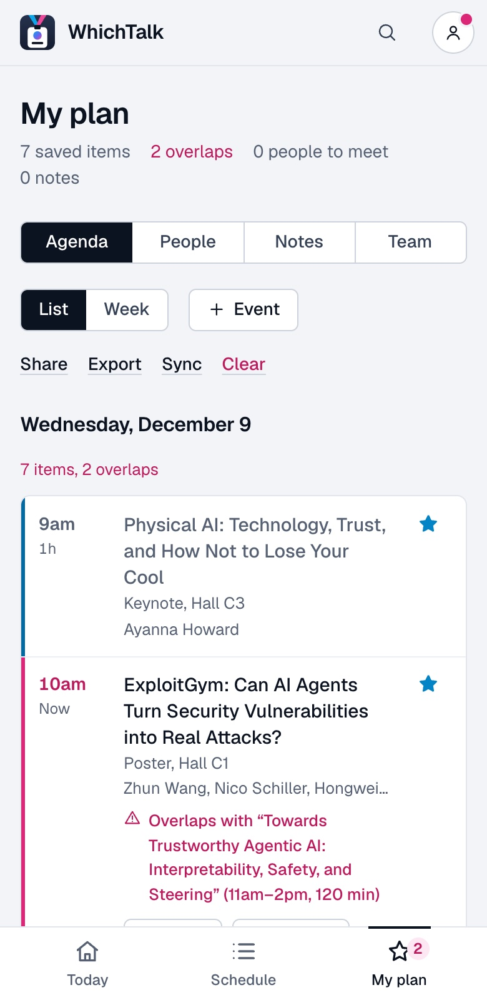
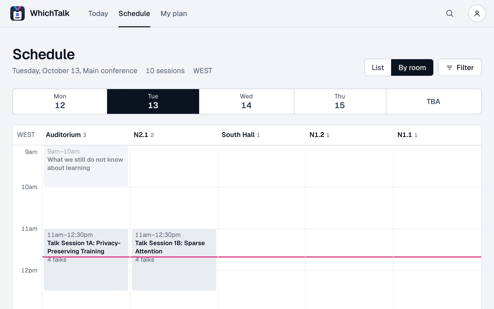

Pick your conference
Each planner holds one conference’s full program: every talk, poster, workshop and social, with rooms and times.
Open now
Not here yet
Atlanta, Wednesday 9 December
at 11:40am
One day of the NeurIPS 2026 program as the planner shows it, set by the clock above. Open a row for its details; the stars are the sample plan.
Your plan, checked as you go

A count that keeps up
Saved items and overlaps update with every star.
Your own events
Add a dinner or a meeting, and the planner works around it.
One tap to star
From any list, search result or detail. Stars stay on this device.
People, notes and team
Who to meet, what they said, and where your colleagues are going.
Share, export, sync
A read-only link, a calendar file, or a QR code to move it all to another device.
Overlaps, named
When two items clash, you see which one and other times for the same content.
No account and no tracking. Your plan is saved in the browser and the planner keeps working without a connection.
Your plan, checked as you go
A count that keeps up
Saved items and overlaps update with every star.
People, notes and team
Who to meet, what they said, and where your colleagues are going.
Your own events
Add a dinner or a meeting, and the planner works around it.
Share, export, sync
A read-only link, a calendar file, or a QR code to move it all to another device.
One tap to star
From any list, search result or detail. Stars stay on this device.
Overlaps, named
When two items clash, you see which one and other times for the same content.
No account and no tracking. Your plan is saved in the browser and the planner keeps working without a connection.
Add your conference
WhichTalk is open source. A conference is one folder: a settings file and the program. Adding one takes no code.
You need Python 3.9 or newer and a copy of the repository.
-
First, make the folder.
python3 -I whichtalk new yourconf-2027 --name "YourConf 2027"created conferences/yourconf-2027 next: edit its conference.json and program, then run python3 -I whichtalk check yourconf-2027
conference.jsonevents.jsonREADME.md -
Then add the program, one entry per item, and check it.
{"id": 3, "kind": "Talk", "title": "A paper presented in session 1", "authors": ["Author One", "Author Two"], "room": "Room 101", "start": "2027-06-08T10:30", "durationMinutes": 20, "parent": 2}$ python3 -I whichtalk check yourconf-2027 yourconf-2027: ok, 6 events (1 without a time), 2 abstracts
-
Last, build it and open a pull request.
python3 -I whichtalk build yourconf-2027
ExampleConf 2026, the made-up conference in the repository, built by the same three steps.